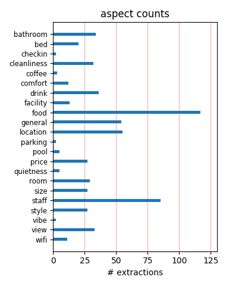
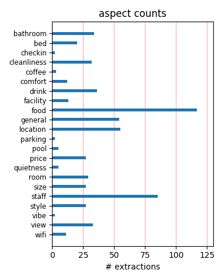

This hotel is relatively far out of central Berlin (wherever that is!!) but our suite was unbelievable. Service was very pleasnt if abit lacking in co-ordination. (4 requests to get room cleaned). A great hotel that I would definitely stay at again!
We loved Andel's. Beautifully fitted out rooms with comfortable beds and funky modern decor, great breakfasts, a bar with a view across the city, and convenient public transport into town. If it had had free internet, it would have been a perfect hotel.
It may be a little far out, but a frequent tram takes 10 mins to Alexandraplatz (cool east berlin square) another 10 min walk and you're in Musuem island. Cool hotel, decorated very funkily, great shower, great staff, good breakfast, great views from the top bar floor. This is a good hotel and reasonably priced! All good!
One of the nicest, most modern hotels I've stayed at. Great food and so clean. Location a little out of town but means you get to experience the excellent public transport services of Berlin and the old East side of the city. Brilliant service - all staff incredibly friendly. They couldn't do enough for us. Highly recommended.
Excellent rooms, service, spa + wellness, breakfast and wonderful view over Berlin from both the Sky Bar and the Sky Café. The food was delicious and the prices were fair/okay - the staff was friendly and very helpful. All in all: a very nice and relaxing atmosphere - so if you go and visit: ENJOY your stay at Andels Hotel Berlin.
We loved this hotel! Had a wonderful room. The facilities were great, sauna, massages etc. Breakfast was included and it was delicious. Very easy to get into the centre of Berlin. The bar at the top of the hotel serves great nibbles and brilliant cocktails. No complaints at all! Do the segway tour. Fantastic fun and lots of culture!
Just back from 4 nights over New Year at Andels Berlin. Absolutely no complaints at all about this modern, friendly hotel. Spacious, well appointed rooms (only improvement would be free Wifi). The breakfasts were amazing - wide choice and friendly staff. Don't miss the Sky bar on the 14th floor for great views over Berlin. We will be going back!!!
modern hotel with good size rooms, really comfortable beds. The food was lovely, we had buffet style dinner and breakfast, no complaints. Transport outside the hotel takes you into the centre of Berlin, you can buy tickets at reception. There is a really good small Italian restaurant opposite the hotel, excellent value for money, very friendly staff.
its a good hotel, however I felt that the room size is just a little too small for 2 people to stay. my room had some very standard entertainment system and equipment for your short stay. However I would not recommend you to stay in andel's for a trip longer than a week. But yes for however short your stay at andel is... a visit to the sky bar is a must...!!
The rooms of the hotel are comfortable and very clean. Breakfast is great and the staff is friendly and helpful.We liked that he bar on the terrace has a great view of the city. The hotel's location isn't in the city centre but transport system is nearby, frequent and easy so we had no problem in our transport. I didn't like that we had to pay for internet access!
Trendy designed rooms/hotel. We had a nice walk in shower and really liked the style of the room. Most tour operators have really good offers for this hotel. We didn't like the food in the restaurant. The food doesn't match with trendy atmosphere. But there are enough lovely restaurants in the neighborhood and it's easy to get around, the tramstop is in front of the hotel.
Excellent transport connections. All the staff were very helpful and knowledgeable about how to get to attractions, shopping etc, and what to do. The room was spotless, and the breakfast spread was worth it. The spa area was nice and clean too. I would recommend staying there. Public transport with the tube and metro train from right out the front of the hotel. Nice duvets!
Clean, very nice rooms, very efficient staff ,very good breakfast. The bed's are large and very comfortable. Nice design and the bar on the 15th floor is just great, with a great view (drinks at reasonable prices). If you travel by car you can park your car at the hotel. Public transport is just a few metres away, and you can buy the tickets at the reception - great service.
It's not in the most central location, but it's connected to the city center via the tram and train and there's a direct train from Schonenfeld airport (for those Air Berlin flyers). I loved the decor of the room and the common areas. I enjoyed some scrumptious cocktails and sweeping views in the Sky Bar on top of the hotel and had a wonderful massage and pedicure in the hotel spa.
Fantastic hotel! I stayed at the hotel for 3 nights. The rooms were a big surprise. Much better than the pics they have on the internet! Very big very clean and very modern>Specially the bathroom. The hotel is next to a train and a tram station. You should definitely visit the skybar at the top floor with a fantastic view over Berlin! One of the best hotel breakfasts i have ever had!
Ou first trip to Berlin ever. We stayed at the Andel's hotel Berlin on the Landsberger Allee, and we were dazzled by the ambiance and service. It's a 4 star hotel but you feel like it's only for the rich and famous! A perfect service and ever friendly personel. The rooms are outstanding, same for the breakfast buffet. The skybar is a must see, and the health spa offers everything you coul possibly want.
I spent 4 nights for a workshop in this hotel. I loved Andel's for everything. Rooms are beautifully fitted out and superbly decorated. Breakfast and lunch are superlative and also the restaurant for the dinner is magic: service and menu are impeccable. The only negative thing: if it had had free internet, it would have been better. I was forgetting...prices are low reporting to the quality level it offers.
Excellent hotel. Lived up to it's Trip Advisor reviews. Modern design. Comfortably furnished. Superbly clean throughout. Breakfast was brilliant. I defy anyone not to enjoy it. Cocktail bar and pasta bar both great too. One slight criticism - lack of storage space in the room, small wardrobe and no drawers. Reception staff and concierge couldn't have been more helpful but breakfast waiters were a little moody.
I stayed in Andel's Hotel for four days in March 2012. I can say that the service is excellent, the room has a wonderful bed. Our short stay at the hotel was everything we had wished for. The rooms are fresh, clean and tastefully decorated, the staff extremely friendly and the position of the hotel in Berlin is perfect. Breakfasts and meals were of high quality and well served. But it's just for western people.
Stayed at the Andel's Hotel during a recent convention. The overall experience was excellent, with everything on spot, from the quality of the room to the helpful staff. Breakfast was amazing, with a huge variety of fresh dishes served at the very confortable dining hall. The Gym was very well equipped and spacious. Only downside is that the hotel is pretty big so expect a long walk from the elevator to the room.
Spent two nights in Nov 2011. Room was very nice, quiet, clean and well appointed. Only slight disadvantage is that there is not much around the hotel, however it was very easy (and I mean very easy) to buy tram tickets from reception and take frequent tram (M5 or M6) to Alexander Platz (10 mins). Breakfast was good too. I did find the restaurant in the hotel a little pricey for my money and their portions quite small.
very nice, modern hotel, clean spacious rooms. great breakfast. tram and S-bahn in front of the hotel. some shops across the street. beautiful bathroom, nice beds. with the S-bahn it is a short distance to the nice area of Prenzlauer Berg. by tram you can go to Alexanderplatz. the only thing that is not so nice is the surrounding of the hotel, it is not a nice area to stroll around. but for the rest we had a great stay!
HI, I was in this hotel 6 nights. this is a good hotel for Messe. The location is not very nice, but with S BAHN you can reach the city center in 10 minuts. from Alexanderplatz with Taxi costs about 14 EUR. I booked this hotel with booking.com for a great price about 109 EUR for doubleroom with breakfest. The breakfast was very good too. NIce rooms, book on higher. i would come back again. ps: there is a nice spa area too.
Andels hotel was a superb choice, its proximity to public transport was the best thing about it. Out the front door and there was the tram!!! The breakfast was also great set us up for the day. the front desk staff were all very helpful. The only negative point was the cost of the roof top bar, we had something to eat there on our arrival which was very good but expensive but the view was great. I would stay here again and recommend it to friends.
We visited Hotel Andels as the next stop during the honeymoon. We spent here only one night, but we can confidently recommend this hotel. Service very professional, well-furnished rooms, very clean. Excellent breakfast, very large selection. The absolute highlight is the sky bar where you can have some very good drinks and you can still eat very well. The view is priceless. We'll be back soon, as we want to visit Berlin for a few days now. Higly recommended to anyone.
Only stayed one night on Business but was very impressed. Very modern, clean and spacious hotel. Staff attentive and friendly, I would say service very good. Room very clean and comfortable and nice bathroom. Didn't venture from the hotel so cannot comment on location but views from the sky bar and coffee bar one floor below impressive. Breakfast selection again excellent. If within easy reach of Berlin attractions, I would consider this as a hotel to bok if travelling for pleasure.
This is a huge ultra modern hotel. The decor is a bit quirky and not to every taste but it is extremely comfortable. I had two twin beds which were a bit on the narrow side but very comfortable. The bathroom was amazing: well lit, huge and a terrific shower. The staff was very helpful. The one drawback is its location: it is on the eastern edge of downtown but once you have mastered Berlin's great public transport system it is not too much of a disadvantage. HIGHLY RECOMMENDED. GREAT VALUE.
An ultra modern and very comfortable hotel; staffed by very helpful, friendly and pleasant people. The food was delicious and plentiful. We ate in the restaurant one night and found the service excellent, although the food and wine was a little pricey. Transport links from the airport and around the city are excellent. The cocktails we enjoyed in the Sky bar were even more enjoyable looking at the stunning city views. I thoroughly recommend the hotel to both business and leisure travellers.
Helpful staff at this very clean, modern and friendly hotel. Excellent buffet breakfast included. Across the street from tram station to take you to downtown areas; nothing within walking distance of the hotel. Staff worked hard to provide good restaurant and travel recommendations. We had two rooms for the four of us and we would definitely recommend/stay at this property again. Very large; 500+ rooms but you never felt lost in a big place; nice rooftop lounge with excellent views of Erin.
The Andels is the best value for money hotel in Berlin. The room are very comfortable and modern, good service, good food (they should add fresh juices at breakfast), nice fitness and welness. Don't forget to visit the bar on the 14th floor, you have an amazing view over Berlin. The business launch is very comfortable. I have stayed in this hotel very often and can recomand it to everyone. Only one negative point, you have to pay for the parking garage. I'll be back! Eric A. The netherlands
The rooms were very nicely appointed; the bed was comfortable, and the bathroom was spacious and modern (nice stand-up shower with great water pressure and shower head). The breakfast buffet was elaborate and delicious, and the cocktail bar on the top floor made great martinis -- the views of Berlin were great. There was good access to trams, U-Bahn and S-Bahn trains, but we found it a bit far away by the end of the weekend. The trip from the hotel to Alexanderplatz was approximately 25 minutes.
I stayed at the Andel's Hotel in March, while on business in Berlin. I was pleasantly surprised with my stay here, as it was a wonderful hotel, ideal for any business travellers. The hotel is spotlessly clean, modern, spacious and bright. The rooms was spacious and the bathroom was very modern and clean - the shower was great! The hotel is ideal for business travellers (or anyone visiting a show at the Messe). The trams stop outside the door of the hotel. Would highly recommend this hotel for future travellers!
If you want points, i'll give it a 9,9/10. The 0,10 is because it's a little bit outside the center of the city, BUT there is a tram-station just in front of the hotel and it takes 10 minutes to get to Alexanderplatz. Very modern, very clean, very friendly staff, very nice SPA and the sky-bar on the 14th floor is a must-see. Breakfast is super. The hotel-restaurant is very very good. Nouvelle cuisine. Great service. Large wine-card. Large room, mini-bar, flatscreen TV, safe. There is a large parking under the hotel. 10 eur/day
This was base for a 3 day rammstein at velodrome november 2011 and again 2 times during summer 2010 & agoust 2011 on the way to Iceland. Great little hotel with among the friendliest staff I have ever met. Room was nice and clean. Large bathroom but it had a tub! There were some very personal touches that went a long way. Andel's is one of the best hotel not far away from Alexander platz, Large Breakfast, Full Service in Rooms, Sky Bar is awesome when its about drink & Eat! Best 5 stars hotel thats for sure! First Choice when i go to Berlin!
The hotel exceed all my expectations. Many thanks to Juliana Luettich and her team. Great place for a couple of drinks about a 3 minute walk is a local bar called Libero. Exit the hotel main entrance, turn right and cross at the lights. Take the next street off to the right called Karl-Lade-Strasse and the bar is a few metres on the right. On the Museum Island directly opposite the main entrance to the Pergamon Museum is a fantastic place to eat. It is called Pergamonkeller and the food is delicious, good value for money and the atmosphere is great.
I stayed here for a conference. It is a great hotel w/an amazing staff. The hotel is definitely a distance from the core of Berlin. But, the S-bahn station nearby makes easy to get where needed very quickly. Restaurants in the area are limited, but, the are a couple. Also, there is a grocery store about a 15 minute walk. The consierge was very helpful in understanding the use of the public transportation(it is really easy), all passes needed for it, &, making arrangements for my departure. I would definitely recommend this hotel. Don't let the location discourage you.
I stayed 3 nights this time at the Andel's hotel. My last visit there was a success and this time the experience was equally great. The only minus is the location but S bahn 5 and 6 will take you to Alexanderplatz and they stop almost at the door very often. So, at the end, this is not a big issue in my humble opinion. The rooms are stylish and perfectly clean. The hotel offer free wifi access and there is a wellness centre that I didn't visit. The breakfast is excellent. The staff is very polite and helpful. An excellent hotel, maybe the best one I ever stayed at... Good luck!
The hotel was excellent in almost every area. I recently used it for a conference. The accomodation rooms are well styled and have some clever touches and the meeting rooms are very well thought through including more than enough power sockets to go around and excellent audi-visual equipment. The food was also surprisingly good, esp. the lunches served during the seminar. The onlything I would have liked to have seen was more equipment in the hotel gym. The prices were very reasonable. It is not a place to stay for visting the centre of Berlin, but a brilliant hotel if organising a conference
Stayed four nights at this hotel with a group of friends. Lovely bathroom, with large walk in shower and a bath. Room very modern, with very comfortable large bed and good quality duvet and pillows. Lovely breakfast. Sky bar on 14th floor had wonderful cocktails and views across the city. Only problem was that it got too busy on the Saturday evening. Hotel is very spacious and the staff very helpful at all times. The hotel is out of the city centre, but the trams stop outside the hotel and take 15 mins to get to Alexanderplatz. Berlin is a fascinating city to visit and look forward to returning.
I disagree with some of the reviewers regarding location. This hotel has a tram stop right outside and is only 10 minutes away from Alexanderplatz. There are a few bars in the area so you don't have to stay in the hotel. The room was clean and well equipped. Food was a little disappointing with no choice for dinner (but there are plenty of good places to eat around Alexanderplatz). Staff were helpful and always available to answer questions. The Sky bar and cafe have lovely views over the city, although they are a bit soul-less. I would definitely recommend this hotel for couples visiting Berlin.
Three day stay 11th december to the 14 december, well what do we say, this must have been the most genuine friendly hotel we have ever stayed in, well priced, location wasn`t central but that didnt matter , tram right outside the door , 5 minutes and we were in the middle of the city, at nights the sky bar located on the 14th floor provided us with beautiful views of Berlin at night, the girls that staffed the bar were out going friendly and professional, food was always of a good standard, when back in Berlin again we will stay at andels, I would strongly recommend it you wouldn,t be disappointed
We stayed at this hotel for 4 nights and have to say that the experience was fantastic, excellent well trained and courteous staff, nothing was too much trouble. The rooms were spotless and bed linen changed every day. The concierge was extremely helpful and knowledge. On arrival we were greeted politely, our bags were delivered to the room and the concierge gave a 10 minute overview of the hotel. The hotel is well placed, just a short tram ride to Alexanderplatz, the tram stop is right outside the door. Would certainly recommend this hotel without hesitation. Looking forward to staying here again.
Enjoyed two nights of faultless accomodation and service whilst staying in Berlin for a city leisure break. The hotel although not centrally located is only a short tram ride to Alexanderplatz from which the rest of the city is easily reachable by other public transport, which is cheap and frequent. Meals were excellent both in the top class "a.choice" restaurant breakfast room and sky bar, from which there is a great view of the city skyline. Rooms were modern and spotless, all stafff were polite, efficient and helpful, especially with travel plans. I would definitely use again if staying in Berlin
Brilliant hotel with easy connections into the city. Tram and railway stations are on the doorstep. Breakfast was exceptional, staff always courteous and attentive. Wellness area was clean with abundance of fresh towels and gowns. Skybar had a briliant view across Berlin. Rooms were nicely decorated, shower was very good, perhaps more room for clothes would be useful if staying for longer than a weekend. Don't be put off by the rather dirty, third world walkway from the S/Bahn to the hotel. Perhaps the hotel could help with keeping this area cleaner. On the whole exceptional hotel would definitely return if the price was right.
This is a very big hotel in Friedrichshain in Berlin. Not the best location, but the subway is around the corner, so you can be were you want to be very fast. Breakfast is really, really great, something for everybody. The rooms are very clean and lovely. The showerhead was broken in our room, we fixed it with a towel. when we came back at the end of the day they took the towel away and didn't do nothing about it. We forgot to mention this to the reception, so this was partly our fault, but with the towel hanging on such a strange place in the bathroom i'm pretty sure they noticed it, but ignored it. Anyway, we loved our stay here and would come back!
Went to Andel's on a Groupon deal. Food in the restaurant was a-maz-ing - but don't expect a menu - it's that German posh restaurant thing of getting-what-you're-given. Breakfast choice was brilliant - loved the waffles at Friday breakfast, and three choices of honey, and the mini-donuts, and about 50 types of bread. The Deluxe room was spectacular. Service was pretty good but a couple of the concierges were a bit miserable, and the room cleaning left a LOT to be desired. The Sky Bar had amazing views and the free flavoured beer was lovely. Very good access to town on the tram straight to Alexanderplatz (15mins), and on the S-Bahn to Schönefeld Airport (30mins).
The room was large and comfortable.We were surprised (pleasantly) that it was equipped with a USB /dvd player so that we could watch a couple of things that we had brought with us on the 42inch screen rather than the laptop. Everything we asked for was provided immediately (bathrobes/slippers/extra soap). The desk and concierge couldn't have been more helpful. The breakfasts were excellent, with lots of good quality variations of food, so that over a 7 day stay you could have interesting and different breakfasts each day. The fitness centre was well equipped and maintained, as were the sauna and spa. `the hotel exceded our expectations and we were very comfortable indeed.
I stayed for one night only last Sunday and wish it could have been longer! Extremely stylish, modern and clean property with large rooms including free TV channnels that you would normally pay for. The spa is a great place to relax in too and I would highly recommend a massage from the male therapist with the bald head, sorry I can't remember your name! He not only gave a great massage but also loads of useful health tips and it almost felt like a consultaiton with a homeopathic doctor! The staff are very friendly and it really does have a family feel for such a large hotel. I have worked in travel for over 10 years and this is my first Trip Advisor review which says it all!
This hotel is a fantastic place to stay. Friendly and attentive staff. Lovely spa area. I'd recommend the executive upgrade for large, clean and relaxing rooms, free premier wifi connection with access to the private executive lounge and smokers lounge. It was no problem that this hotel was slightly out of the main tourist area. It's only a 30min direct train ride from Schonefeld Airport. Both tram and train stations are directly outside of the hotel. Included in our deal was a 72hr welcome card which enabled free access to transport and discount on tourist attractions. Transport in Berlin is very easy to navigate. The Sky bar has gorgeous cocktails. Highly recommend this hotel for a leisurely stay in this fantastic city.
We arrived very late in the evening but were welcomed warmly by the staff. Unfortunately they gave us a twin room when we asked for a double but they didn't have any issues changing this very quickly and efficiently. The rooms are very modern (maybe a bit too modern because it took is a while to find where the wardrobe was!). The bathroom was stylish and very clean. The hotel sky bar was great and all the staff are very welcoming, the beers were good too! The choice for breakfast was amazing, the quality of the food was really good. The hotel is a stones throw away from the trainstation so it's really easy to get a train into the centre of Berlin. Overall we were extreemly happy with out stay and would definately recommend it.
we were there for two nights in october and just loved it! it is a very nice hotel and excellent value for money! rooms were very nicely decorated (contemporary style) and the bathrooms were absolutely spotless! it was more than we expected it to be! the breakfast was really great as well and don't miss the perfect sky bar! the location isn't as bad as some have described! we actually found the location quite convenient, as there is a tram passing right outside the hotel which leaves you in Alexanderplatz, and once you are there you only want to walk around to see everything! generally Berlin's transportation system is very effective and I believe no one should have problem getting around! just go and don't think over it twice!
We stayed at this hotel as part of a voucher weekend. It was superb. It is modern and luxurious with helpful friendly staff. Not to be missed, is the sky bar from which you can enjoy stunning views over the city, and the spa which was wonderful after a full days sightseeing (I would recommend the Fat Tyre Bike Tours). The breakfast buffet was varied and delicious. We ate Dinner there one evening, and the food was delicious. Although it is not in the centre of Berlin this matters not a bit as it is right on the tram route. Getting around in Berlin is so simple and this hotel is also right on the main Train route, so were able to catch the train direct from Berlin Schoenefeld Airport. A perfect choice and I would highly recommend it.
I wanted to delay the check out for half an hour because I had to pack, so I called the reception, but the answer is simply 'I'm afraid not'. I mentioned that I only needed a little bit extra time to pack my stuff, answer was still simply 'I'm afraid not' I forgot my sun glasses in the room, and I called right after I left the hotel. After a whole afternoon, and three calls I made, I still can't get an answer of whether they found it or not. They said they'll call back, but that never happens. They first said that later tonight I can get an answer, and then tomorrow noon time. I explained that I have to fly out really early morning tomorrow, but they simply said they can't help. This is really not the German efficiency that I expected.
Stayed at the Andels Hotel for 4 Days for my husband's 60th birthday. A very large hotel that is situated in the East of Berlin. Transport links very convenient with the tram right outside the hotel. We had some very bad weather so chose to eat in a small Italian restaurant across the road one night. This was an excellent choice as the we thoroughly enjoyed our meal and at a very reasonable price too. We also ate at a local Balkan restaurant and were very pleased with both the food and the price. We were told by the concierge that there was nowhere good locally to eat but it is definitely worth a little research before you go as we came across several good local restaurants and some very reasonable pubs. Will definitely stay here again.
We stayed at Andel's Hotel in May, and had reserved two bedrooms. One for myself and my husband and the second room for my parents from Australia. From beginning to end we were welcomed by friendly and polite staff. We upgraded both rooms for 30 euro each and were pleasantly surprised with what this included. We had full access to the A-Lounge, which included complimentry drinks and Canapes and Continental Breakfast in the morning. The rooms were spacious, modern and very well decorated. The Sky Bar on the top floor of the hotel had lovely views over Berlin, a must to visit even if your not staying! The Tram stop is just outside the hotel, making it very easy to access all parts of Berlin city. I would throughly recommend this hotel to anyone.
I only ever post on TA if something is exceptionally good or bad. I am pleased to report that Andel's was excellent in every respect. On our last day my wife and I, both seasoned travelers, were trying to think of any aspect that we could be critical of - we really couldn't think of anything. Room very modern and clean. Service efficient and friendly. Buffet breakfast extensive and of the highest quality Location - I guess this was the only thing you could perhaps criticise as it is not slap bang in the centre of Berlin (although I guess Berlin is more a sprawly city so perhaps does not have a true centre?) but with a tram and railway station right outside your door you had instant access in 10/15 mins to the whole of Berlin. Forget the rest book Andels.
this hotel was top notch in every respect. the service, the cleanliness, the staff, and the BREAKFASTS (the best in all of berlin, no doubt), were excellent. would absolutely recommend this hotel to any traveler, with kids or without. the executive lounge is a treat; splurge on it if you can: the food is delicious and a very nice atmosphere. the rooms were large and well equipped: the linens were clean and crisp, and very comfortable overall. a special appreciation to michael, the concierge, for his unwavering assistance and formidable attention to our family, making our stay truly unforgettable. stay at the andels hotel, you will not regret it. while the distance might appear far from the city center, the hotel is located right beside trams, and getting downtown is easy and affordable.
Here for a conference so never actually left the hotel. Great first impressions with impressive lobby and welcoming staff. First room was a very nice twin however the front desk changed to a double no problem (Best to ask first). The cafe on the ground floor does a very nice selection of simple pastas and good wine selection and the main restaurant offers a more formal experience with well presented food and attentive staff. Sky Bar is excellent with nice salty snacks to make you thirsty. Good selection at Breakfast buffet. Only down side is having to pay for the rather slow WIFI ! Would definitely consider when returning as a tourist based on the good value rates and modern clean feel of the hotel. Yes, it's not actually near too many of the main attractions they are only a short taxi ride away.
What I like about Andel's Hotel? It is very spacious, it is extremely stylish and it is ultra-quiet. Don't get fooled by the remote location. Public transport takes you to Alexandar Platz in five minutes. The room we stayed in had a shower and a bath, a huge bed and plenty of room to stretch your legs :-). We didn't try out the main restaurant because it seemed too expensive. Besides, Berlin has too many opportunities to try out. We did give the smaller bar/restaurant (oscar's it's called) a chance but it was rather disappointing (bad price/quality ratio). The wellness facilities are good. There's a relax space, two saunas, a steam bath and a whirlpool. Be aware this hotel doesn't have a swimming pool. Staff friendliness overall was average. Reception scored pretty well. Others were less friendly.
This spacious, stylish, contemporary hotel is located in the north east of the city just by a tram and S-bahn station and less than 15 minutes by tram to Alexandre Platz. We spent four nights here staying in an executive room which gives access to larger rooms, with well insulated windows, an excellent shower, a very comfortable bed, TV, DVD player and airconditioning. There is a separate dining and lounge area where you can have breakfast, afternoon snacks and drinks and snacks in the evening. The hotel has a pleasant spa with steam room, two saunas, a jacuzzi and relaxing areas inside and on an outside terrace. We also tried Oscars, the italian restaurant in the foyer which was very pleasant and reasonably priced. I unfortunately fell over whilst in Berlin and the staff couldn't have been more helpful.
This hotel is very modern and clean, and is beautifully designed. The beds are very comfortable. The staff were friendly. We used the concierge service to organise travel cards and they were very helpful - they gave us advice on tram lines and trains, and provided us with travel maps. The hotel is not in the centre of Berlin, but is very accessible - the tram stops outside the hotel that takes you straight in to Alexanderplatz and there is also an overland train s-bahn stop next to it too, and an underground u-bahn stop. Breakfast was good, with a wide selection of breakfast options - hot food, continental, cereals, yoghurt, fruit etc. The bar is well worth a visit with an amazing view over Berlin, and serves nice cocktails. I would recommend visiting this if you are in the area, even if you do not stay at the hotel.
We stayed at the Andel's Hotel from 16-18 December, and everything about the experience was an absolute pleasure. Every part of the hotel is immaculate, from the bright, welcoming reception area to the modern, stylish bedrooms. We requested a room on a lower floor, and this was granted without hesitation or hassle. The staff were always friendly and helpful, and no-one would pass you by without saying Hello (or Hallo!). There were breakfast options to suit everyone, with constant re-stocking of items which ran out quickly, and on a Sunday breakfast is available until 1pm! We dined in the ground floor restaurant Oscar's, and enjoyed a lovely meal for two with drinks for under 40 euros - not a bad deal in anyone's books! All in all, an absolute pleasure to stay at this hotel, and for the price for bed and breakfast, an absolute steal!
Just back from a week in Berlin where we stayed at the Andels Hotel. We caught the train from Schonefeld airport and after one change over, we found ourselves outside the hotel. We also found a tram stop directly outside and this along with the underground and s bhan lines nearby, made this location bang on! We enjoy getting to grips with public transport and Berlin made it easy! The hotel itself is absolutely spotless! The reception area is so spaceous that it made a busy hotel seem quite quiet. The Sky Bar was awesome with breakfast being of a really good quality with extensive choice. The only issues were no drawers in your room for storage and the fact that they wanted to charge 20 euro's for the hire of bikes which remained chained outside the hotel for the duration of our stay after we had paid out a few hundred for our week, surely a deposit would be fine!!
A huge buisness hotel 4 km from Alexanderplatz. (An S bahn & Tram outside). Would not recommend this as a place for families but good for buisiness stays & that was evident. Be aware that when you book a superior room this is the standard & that although the hotel advertises triple rooms it does not have triple or family rooms & so will just put in another bed. This means in the standard/superior room you will barely be able to walk around in the room & will need to take turns getting dressed! We were upgraded to a deluxe room which was perfect but may cost considerably more. The bathroom & beds were great. The breakfast was superb with choices including everything you could want.The sky bar was busy & beautiful.Lovely spa /sauna area (but, shy Brits, be aware that it is mixed & no clothes!) Overall, a smart clean & comfortable buisness hotel on the outskirts of the city.
Excellent hotel in all respects.We booked via a Times offer and could not have been better pleased. Staff friendly & helpful ..room had all we needed (shower best we have ever had abroad!) if a tad mean on wardrobe space. Breakfast choice was vast (ate in Oscars first night and had pasta which was cooked to order and delicious). The concierge was most helpful, room was serviced (& towels changed) every day - even before we had returned from breakfast! Location at first glance seems a wee bit remote but as transport is so good in Berlin (tram & train station right outside hotel) it didn't matter a jot. The 'Sky Bar' on 14th floor was fabulous .Journey from Tegel airport (sadly closing) to hotel done in 30 minutes [tip - use the train, don't waste money on a taxi]. German people are so polite (including the 2 young beggars we encountered at different places who hoped that their English was ok - humbling or what!)
A friend and I stayed at the Andels in August as part of the Groupon deal. We had a twin room, which was nice and spacious and immaculately clean, it was a bit of a trek from the lifts but then again the hotel is huge. Beds were comfy enough, everything worked as it should. One strange thing was we found one of the TV channels showed hard core porn 24 hours a day! Bit shocking, not sure if it was a mistake and that they hadn't disabled it from the previous guests or what. Breakfast was excellent, especially the pastries and waffles. It is a little way out but the tram is so convenient it really is not a problem. Good free wifi access. The Sky Bar is busy, decent views of the city and nice and modern, good cocktails. They were happy for us to leave our luggage to collect again later before our flight. Overall, great value and comfort. Oh, and there's a 24 hour Burger King opposite if you have the midnight munchies!
We stayed in a Deluxe room for 4 days: It was a very big room wit a large Lcd-Tv, Dvd player, two design chairs, big closets , high ceiling ,... A very modern room But Beware : Next to one side of the hotel are 5 railways ( 3 Regio DB and 2 S-Bahn's ) There is a lot of noicenusance at night and at day ! The breakfast was OK but the service and the varietie of the breakfast was very poor ! The location of the hotel is not good : 15 minutes away from Alexanderplatz by tram ( S bahn , U bahn and tram station next to the hotel ) There are 4 free to ise iMac's + printer in the lobby and also free Dvd rent ! The skybar on the 14 th floor is very beautiful ! The service is also very good but the prices are very high ! 3 euro for a 0,2 cl cola ! The hotel would be better if it has a pool but the fitness is very good equipped with high tech machines ! It is open 24 h a day ! I recommend that you book a room directly on the hotels website because that's the cheapest way ! Regards, Max
I stayed at this hotel for three days with work and had a very comfortable stay. The room was spacious and as I was on the seventh floor, had a view over to central Berlin. The quality of the food was very high and breakfast is certainly worth paying for. The sky bar is really funky and the food served in the sky bar isn't bad value for a hotel bar. I found the staff were very helpful and friendly. When walking around the hotel, the housekeeping staff all stoped and greeted me and the staff at the front desk were able to provide good advice on transport. The conference facilities are excellent, although the wifi is not free at this hotel (€3/hour). The only downside to staying in this hotel is that it is in a fairly derelict area with few decent shops or facilities, although the hotel has several restaurants and a small shop. public transport in Berlin is excellent so it is easy to get into the centre, but if I was staying for pleasure I would prefer to stay in a more lively area.
We have just come back from 3 nights in Berlin. We loved the hotel, it was modern and contemporary with a lovely bathroom and really reasonably priced. The location did not bother us too much as we bought the 3 day Welcome card for 25 Euros which we used to get a train from the Airport direct to the hotel and then over the 3 days. The welcome card also offered discounts to museums, restaurants etc. We found the transport in Berlin brilliant and having the tram and S-Bahn next to the hotel was a bonus. The staff were excellent and as we checked out of our hotel on Thursday they informed us that there were no flights back to England due to the volcano in Iceland. They phoned round trying to find us a place on a bus or train and booked us the last 2 seats on a coach back to England. They even picked up our tickets. Thank you to Sebastian, Steven and the other young male member of concierge for organising this. They really went out of their way. We were very pleased to get back to England as we know if the hotel hadn't acted quickly for us we would still be there. We would definitely stay at Andels Hotel again.
We went to Berlin for the weekend - meeting up with my student daughter and her friends who stayed at the nearby hostel. In a rush we didn't have time to do much research. The Andels Hotel proved a real find. My main concern had been that the location didn't look very central. However, this was not a problem at all - frequent trams go straight into the centre from outside the hotel. So with this worry removed the hotel then had no disadvantages. It is sylish and well appointed. The staff are all concerned to make your visit enjoyable and help in any way required - we wanted to know how to get into town. The concierge explained all the options and sold us the tram tickets to get us started. The room was comfy, the breakfast good. We didn't eat at the restaurant but did enjoy cocktails in the 'sky bar' on the 14th floor with its panoramic views - and good range of cocktails. We looked round the spa and wished we had longer to enjoy the facilities. I'd like to go back when the weather is warmer for sightseeing and I'd have no hesitation in going back to this hotel - it is a big factor in my wish to re-visit Berlin.
Me and my wife have been fortunate enough to have stayed in about 6 four or five star hotels over the last 21 months or so in different european cities. In one we felt it was ok, not particularly good, in the others we were very happy, but this one was undoubtedly the best. I can not believe its only four star, definitely better than the 2 5 star hotels we stayed in (which which we were pleased). This stay was a four night offer from Guardian Readers Offers (or something similar), through Great Getaway, absolutely superb price, including flights with BA from Heathrow. Rooms really nice and spacious, breakfast good, staff very friendly, and although they were charging (relatively modestly) at 2 euros for an hours use of the internet, in fact until our last day the apple computers in the lobby did not ask for log in/room details so it was free! (Important to me to use internet couple of times a day at least) Was minus 15 to minus 18 degree during the day and evenings at the time (and at night hit minus 25 degree apparently) so most of our time we spent in museums, so a bit cultured out, but definitely a good trip.
Really can't find a thing that I would even want to whinge about never mind complain from check in to check out it was a great experience. The staff (all of them without exception) were welcoming, knowledgable and were genuinely nice people that could inform you and were interested in you as a customer. The room was large and the bathroom and shower room fab - exceptionally clean and well maintained We paid for access to the lounge and found this a great place to enjoy a snack a beer and a chat (as well as get expert advice) after a days walking and we did a lot of walking (and quite a lot of beer!) - I would recommend this. The travel to and from the hotel is simple and you can get everywhere quite easily as the S-Bhan and the Tram/Bus is outside the door (to and from Tegal Airport I would suggest the bus and the the S Bhan 41) - we had the 3 day card and this made life easy - again get one at the airport. We were in Berlin for 3 nights with 2 full days - not nearly enough - you have to see the Pergamon Museum it is incredible and the Reichstag a must and we missed more than we saw and couldn't have been happier with the choice to where to stay - many thanks.
This hotel is new, modern, and was a very nice stay for my 1 week stay in Berlin for business. The rooms are modern and clean... The wellness center was excellent, two saunas, whirlpool, outdoor patio, turkish steam, etc... There is not a lot around this hotel.. there is a stip mall across the street which doesn't look real attractive from the outside, but the little italian restaurant was a surprise inside, very good and charming. You will need to take the trolly or subway to get anywhere, but in my opinion it is much better to have the trolley and subway stop in front of the hotel (which it is) rather than a centrally located hotel without a stop close by. The tram takes you to Alexanderplaz - 15 min ride... Be careful - not all the trams go there, but most do..Just make sure you get on the proper numbered tram... it is very easy... Of course the subway is another option and very easy to navigate. The breakfast was excellent and included in room rate, but they do separate the cost and show it seperately on the invoice. This may be important to business travelers. All in all this was the nicest hotel I saw in Berlin and half the price of others! cannot complain !!
A great experience from start to finish (3 nights): Courteous, knowledgeable staff (they were brilliant throughout); spacious, modern room; good spa & gym (better than some far pricier establishments marketed as 'luxury spa'); 'sky cafe' and 'sky bar' at the top offering great views across the city (if this was bang in the centre, it would be listed as a must in the guide books); extensive, good quality buffet breakfast; great transport links (plus, Berlin has a very good transport system, in the first place); lounge chair plus desk & chair; big tv with lots of channels; bathrobes & slippers; safe with power socket. Ok, it's not walkable into the centre of town; however, the transport links (plenty of tram lines plus train) mean you can get anywhere in the city quickly and easily. Don't forget, Berlin has a fantastic public transport system (far better than London or Paris). It's worth checking whether the sky cafe and sky bar (on separate floors) are booked out at all. We stayed three nights and, they were booked a fair bit; however, that might just have been the Christmas party season. We booked via lastminute.com as their mystery hotel (the one near Alexandre Platz).
I would echo a lote of the reviews here, this is an excellent hotel, slightly (and quietly!) out from the centre of Berlin, but a tram stop in the middle of the street outside the front door gets you to Alexanderplatz in 10 minutes or to Museuminsel in 15 with no changes. (Just make sure the tram is going to the terminus though, some finish "short" only 1 stop away!) The S-Bahn stop for the "Ring" services is the other side of the road. Reception just doesn't seem to be rushed ever, they are friendly and helpful at all times. They let us keep our room for an extra 90 minutes at check out without a fuss. We were upgraded to the 6th floor, an executive room, it was large, spacious, clean welcoming and secure. The bathroom even had underfloor heating for cold Berlin nights! Breakfast was very large, satisfying, well cooked and presented, with good waiter attention for greeting and coffee. The sky bar is worth a visit for cocktails and the view, we managed to get an immediate seat and service at 11pm. Our only complaint was that a double bed really needs a double duvet, not two singles but it was very comfortable, a very minor problem. We would return in a flash, recommended+++
This is a modern, stylish and spacious hotel with excellent facilties and a friendly staff BUT it is deep inside the former East Berlin, surrounded by communist era high rise flats. You have to use public transport to get to see anything of note. Fortunately there is a tram stop and an S Bahn station close by. We found, however, that travelling on the tram was often a crowded and unpleasant experience. Much alcohol was consumed on the trams at all times of day and we frequently encountered gangs of drunken youths both here and in the S & U Bahn systems. We may have been unlucky with our room but we did experience a succession of problems - in-room safe not working, T.V. remote worked sporadically, card slot to switch on the power kept falling off the wall, room fridge not working. All were reported by us, in some cases several times, but none were satisfactorily resolved before we checked out. As for Berlin itself - it will confound all your presumptions about Germany and Germans - it is dirty, the people can be quite rude and the service in restaurants etc is not particularly efficient BUT despite all this it is still worth visiting for its history, culture and incredible energy.
We stayed for 5 days at Andel's. It is easily accesible from airport being right on the S bahn (Landsberger allee) and metro lines (M5). The room was very stylish and immaculately clean. The reception staff were friendly and helpful and the conceirge gave some excellent places to visit and good restaurant tips. Berlin travel cards,postage stamps can all be bought through the hotel. The buffet breakfast was excellent (all tastes catered for). We found travel to all areas easy and transport regular day and night. We didn't use the restaurant but the menus looked excellent and there is a roof cocktail bar which also seemed extremely popular. The hotel was quiet despite being on a main road with metro at the door. Our only problems were we had booked a non smoking room but were told on arrival none were available, with persistance a room was found. We booked through an online booking service and were horrified to find that the rate we had paid was vastly in excess of that which the hotel itself would offer. So I would advise booking direct with the hotel and ask for what special deals are on offer as well. Visit the friendly kebab house across the road for good value food and best vlue beer in Berlin.
Hi, I just came back yesterday from Berlin. I stayed in this hotel with my husband from the 14th to the 18th of January. The location of the Hotel is not the best one, but it's very close to Alexander Plaz. There is a tram 24 hours x day (m5, m6) that brings you there just in 10 min and morevoer it's just accross the road the stop. There is also a train stop very close to the hotel (just 2 min) , the S9 passes there and brings you directly to the SFX airport. The public transportation service in Germany is great, I have to say. The bedroom was always nice and clean, very modern style. The bathroom was amazing too, with a huge shower :) The breakfast was continental so you can find whatever you want to eat from croissants to cheese, salami, sausages etc and it was always fresh, expect for the first day. The first night we had some drinks in the skybar as well, it's nothing special and it's kind of pricy compared to the prices of the drinks in other bar/cafe, but that is kind of expected. I would suggest you to go around the city centre to have some drinks, most of the places they have happy hours or Blue hours between 5 and 8 p.m. The service in general was good! I would go back there if I go back to Berlin :)
I stayed at the Andel's Hotel in Berlin twice at the end of June and then again at the end of July. In total I stayed there for 5 nights. I was extremely impressed at this hotel and its perhaps one of the best hotels I have stayed at. The staff where very professional and friendly. Many people have commented on the location, it is very central to Alexanderplatz which acts as the hub to all parts of Berlin. You can hop on the M5 Tram (Hackescher Markt) and get off at Alexanderplatz, this is perhaps 5 or 10 minutes, so it still is very central despite the comments of other people. I would recommend going on the M5 all the way to Hackescher Markt as there are some really great restaurants and bars located in this area. It takes approx. 15 minutes on the tram (they call it a Metro in Berlin). I really liked how the hotel (despite its large size) it still maintains the feel of a small boutique designer hotel. I was amazed in a 300-plus room hotel that the reception can remember you by name, and even remember you after 3 weeks which was the case with me. The design aesthetic of this hotel is second to one. Absolutely perfect. I would definitely stay at the Andel's Hotel Berlin again and have recommended it to my friends and family.
The hotel doesnt look that special from the outside but the inside is really great. the hudge lobby is really well designed with funky furniture and mac's for you to use free of charge. Our room was a really good size with one of the biggest beds I have ever slept in (very comfortable) The LG flatscreen with SkyTV was brilliant as I enjoyed relaxing watching the latest films after a long day exploring the city. The shower was brilliant as there were speakers in the bathroom and you could listen to MTV while showering. The only thing I would point out about the room was that the air-con only went down to 18 which was a little hot to sleep in but apart from that we both loved our room. I was a little worried about the location of this hotel as it seemed a little far out from the city centre on a map but the location is great. There is a tram and train station directly outside the front of the hotel and the trip into the city centre is short (around 10min) with a tram every few mintues. Public transport in Berlin is brilliant. Breakfast cannot be faulted as it was a massive spread. You had everything you could need there and more. Overall staying at this hotel was extremely enjoyable and I would recomend it to anyone visiting Berlin.
We have just arrived back from weekend in Berlin(6 women). lovely stay the hotel and all rooms spotless,lack of clothes storage would be an issue if staying longer than 3 nights ,reception staff helpful and friendly,breakfast superb.Although located 10 mins by tram from Alexanderplatz ,the M5 stops right outside hotel and runs every few minutes,the train station is literally a few yards from the hotel and the S9 takes you to and from the airport running every half hour.We did have a problem getting to the hotel as we arrived on a Saturday and the S9 was not running,but people were helpful and directed us to the correct trains. We found 2 very nice places to eat opposite the hotel an Italian and a lovely Mexican restaurant very reasonable prices and large cocktails 4 euros each all night ,Would not recommend a weekend but a midweek break due to the train problems and also very busy for getting on hop on hop off buses which stopped running at 3pm on Sundays, and shops all closed ,we wanted to visit the large famous department store that day ,so plans needed rearranging.Welcome card 26 euros a must ,good value .Hop on bus 16 euros for 2 days with the card discount and river spree trip(1 hr-- 8 euros) gave a prettier perspective of Berlin. A 3 night break is not enough time to explore this city properly .
Andel's Hotel is in great location in Berlin , train fr Airport go straight to the station right next to the hotel and there are many buses , tram that go through the area . The hotel itself is very big and comfortable with modern look . The room was very spacious and high ceiling with separate walk in wardrobe , lovely big marbled bathroom with separate bath and shower . The room decorations was very modern and lightings excellent . Morning breakfast were breakfast buffet of many different choices which was great and will really fill you up for the whole morning . There were some restaurant , shops around the area . There is a Burger King and Aldi supermarket opposite . Free Gym access at the hotel also Sauna, Steam room and spa are free for guests at hotel but please note that No clothings are permitted in the Saunas which we found out the bad way and there may be nudists walking around in the spa - Germany ways I guess . There is an restaurant , cafe and bar at the hotel . Both Cafe and Bar are at the top of the Hotel with panoramic view of Berlin which is definitely worth the expensive but delicous drinks on offers . I went with my girlfriend and we had an amazing memorable time in Berlin and this hotel was world class an perfect place to unwind after a long day out! Highly Recommened , would stay here again in the future .
After having been there for work in 2009 we, my girlfriend and I, wanted to stay at Andels' for a pleasant stay at the capital of Germany. It's a 4 **** + hotel and the service is great. It is situated at the former DDR (east)side of the city and that is good to observe in the surroundings. Long alleys and "strong" buildings and some areas where there have to be build soon. The S-Bahn (not underground!) is almost connected with the building and brings you everywhere you need to go, it's the S-Bahn ring around the city! At the Landesberger Allee it self the streetcar (Tramway) is also a good one for quick travel to Alexanderplatz for example, and from here to the rest of the city by U-bahn (yes, that's the underground!). Places like Volkspark Friedrichshain are near and walkable. by tram Prenzlauerberg (Notting Hill!?!?) is good to do, one step-over and it brings you to the top of Kastanienallee, and from here it's only downwards to streets like Kollwitzplatz (Italian restaurant Istoria, yammie!). Downhill a tram or U-bahn brings you back to Alexanderplatz and the hotel. If I get started, and can't stop, but I will.... otherwise you won't read it all :-) One thing, it's surely told by everyone here I guess... The club at the upper floor of the tower of the buiiding, can't be missed, great view especially over nighttime Berlin and good cocktails.
The andel's Hotel in Berlin has a very nice Conference area - the room(s) are very bright with natural daylight which can be dimmed to different shades with built in shades - very accommodating to the main program. The lobby is large and bright and offers enough space for good breaks, the food was very nice, although there was too little coffee (it was underestimated how much would be consumed). The breakout rooms all offer natural daylight as well with views into the old Eastern Berlin. The Conference area is purpose build and a good fit for groups around 250 people. The Sky-Bar is an absolute highlight of the Hotel as it offers very nice Skyline views at night. Highly recommendable (even if only visiting for a drink instead of staying at the hotel). The rooms are good but some are not very spacious. It's smarter to pack light and bring a small suitcase. Breakfast and lunch buffets are large and plentyful. The location of the hotel is OK for a Conference Hotel as Alexanderplatz can be reached with public transport or taxi cabs within 10 minutes. The S-Bahn station unfortunately isn't very clean and doesn't give the best feeling (especially at night). Underground parking is available for 10 Euro per day and is quite useful as garage is connected directly to the Hotel. Overall this is a nice hotel to do business is - for leisure, I'd personally chose something more central.
Check in was quick and efficient. I booked a package including breakfast and a ticket for the public transport for the duration of my stay. Got the ticket and a voucher book during check in. I recommend having a close look at this book as it gives you reduced admission to many of Berlins attractions. Back to the hotel, although it is not right in the city centre the s bahn and tram operate right outside the hotel which makes it extremely easy to get to all points of interest. Arriving at the room I found it spotlessly clean and just as advertised on the internet. There is a good choice of amenities in the bathroom (housekeeping provide a bigger range on request) and the bedroom is also well equipped with mini bar, tea/coffee making facilities, dvd player and a wide range of tv channels. Room and bathroom are quite spacious and the bed was very comfortable. First night I had some room service dinner, it was not a big choice on the menu but what I ordered was delicious and fresh throughout. Breakfast in the morning was very opulent and they catered for every taste. Breakfast staff was attentive and the restaurant had a nice atmosphere. In general I can only recommend this hotel, the staff are genuinely friendly and well informed. I have not made use of the spa facilities so can't comment on that. Should you ever get to Berlin make sure to book here - very good value for money as well!
The hotel is modern, attractive and comfortable, but the outstanding bit for me was the service - everybody was so friendly, pleasant and helpful (and that goes for Berlin generally) - which to me makes all the difference. The staff were happy for us to check in early and to leave our luggage on our last day as our flight only left in the evening. As there were so few English channels on the tv reception hold a decent selection of DVDs, which was great. Food from room service was good, as was the downstairs restaurant. The breakfast buffet is superb and if you can get a table by the window you can sit and watch the world go by. There is also an excellent little Mexican restaurant across the road - good food, large portions and reasonable prices. Part of our package was free Berlin Welcome Cards which provided us with travel on all the trains, buses and trams which was a welcome surprise and very useful - the Welcome Card also gives you loads of discounts on entry fees and so forth. Yes, the hotel is not in the centre of town, but when you are spending all day on your feet I find that you don't much mind the chance to sit on the tram to get back to the hotel! The tram stop (and S-Bahn) is literally across the road from the hotel and run frequently and effeciently so using public transport was a breeze. Truly a fabulous experience - I would return to Berlin in a heartbeat and would definitely stay here again.
Stayed in this hotel for 5 days whilst visiting family in Berlin. First off all, perhaps this is not the kind of place to stay for more than a few days, it seems more geared towards business types though we did like the hotel overall. There were lots of things that were excellent about the hotel so I'll mention those first. 1) The hotel is really close to the S-bahn and trams making it easy to explore the city. 2) The decor is modern and clean in the rooms and lobby. 3) Bathroom/Shower was fantastic. 4) Reception staff/Concierge/Doormen were extremely friendly and helpful. 5) Breakfast was amazing; a tremendous selection of food which provided a great start to each day. The main things that bothered us about the hotel were 1) The rooms (although clean and nicely decorated) were small and there was hardly any wardrobe/drawer space - certainly not enough for 2 people for 5 days! 2) Bar staff in The Sky Bar were slow and not especially friendly - we didn't feel very welcome on the few occasions we went up there (the view however is great!) 3) The hotel does have a spa though we didn't use it, when we went to have a look around the lady was quite rude and seemed like she couldn't be bothered us showing us the facilities. 4) No wi-fi...unless you pay 30 euros to go into some 'lounge'. Overall I would use the hotel again as it was a great location but it was not as amazing as I'd anticipated based on other reviews on here.
My friend and I booked into this hotel in November 2011 and we certainly got value for money. We got a discount at the hotel as we booked through a Groupon offer. The hotel is modern and stylish and has some great facilities. We had dinner in the restaurant one night and the food was really nice, if not a little small on the portion size it was very tasty. The breakfast at the hotel was really nice and there is so much choice to help yourself to, you definitely can't miss the breakfast! We had a suite which was very impressive, the room was very clean and modern. The bathroom had a huge walk in shower, bath and large sink and mirror. The hotel isn't located right in the centre of Berlin but there is a tram station and train station right outside the hotel and the tram takes about 20-30 minutes to get more central. The trains run all night which is good for a night out as there's not the big expense of taxis as you can get a day travel ticket for about €6. The sky bar in the hotel is nice setting but there wasn't much to see from where were sat. Probably nicer sky bars n other hotels to be honest. I would recommend staying at this hotel. The staff were polite, courteous and very attentive. The large, light and welcoming reception/foyer area is impressive. There are computers to use, to get connected to the internet free of charge. There is also Wi-Fi available at a charge for €2 per hour. Had an enjoyable 3 night stay at this hotel
We have just returned from a 4 night stay at Andel's hotel. Our first impression upon arriving at the hotel was how impressive and modern the lobby was. We had caught an early flight and were pleased when the friendly and helpful receptionist said that we could check in straightaway. We had a corner room on the 4th floor,which was huge with a good sized bathroom. The room was very modern and looked very boutique like. We loved it,especially the flat screen tv and king size bed! We also liked the tea/coffee making facilities. The breakfasts in the morning were very good. There was a selection to suit everyone's needs and this would keep is going for hours afterwards! The Sky cafe and bar were lovely too,with amazing views of the surrounding areas. There was a great selection of cocktails in the Sky bar and even a DJ in the evenings on some nights! We wanted to try the fine dining restaurant on our last night,but unfortunately as we didn't book ahead,we were not able to get a table. This was the only thing that we felt really disappointed about,as the menu sounded so delicious and we had been looking forward to it all day. We will definitely be staying at Andel's again when we next visit. The location is superb-it is right across the road from the trams and trains. The staff were all so friendly and helpful and we loved our room. Thank you to everyone at Andel's! Next time,we will remember to reserve that table at the fine dining restaurant!
Booked a voucher via Groupon for the hotel - was not disappointed on arrival. If coming from Tegel Airport, then change at BreusselStrasse (bus to S-Bahn), and get the ring train round to the Landsberger Allee - 200 metres at most to the hotel from the station. trams direct to Alexanderplatz are right outside as well - easy to get anywhere in the city from here. Reception staff are very professional - happy to help, friendly and accurate in what they do. Rooms are very clean, and "designer" in style - wood floors, nice comfy sofa, massive TV, light and airy, comfortable beds, with the usual Continental duvet each on the bed. Beautiful bathroom, and wow - what a shower! Impressive is not the word! Our room was right behind the lift shaft, but there was absolutely no noise whatsoever from the machinery. Room on second floor (same floor as the Wellness area). Restaurant served delicious food - we had a set menu (due to the booking offer), but three courses, and all delicious. Hotel also accomodated a nice Hindu couple (no beef dishes), without a problem, once the staff understood about the religious significance. No fuss, no problems. Wine was expensive, but very good. Had a drink int he 14th floor Sky Bar - great views across the city - go at night, the lights across the city are beautiful, and the TV tower lit-up is such a spectacular sight (well done the old DDR!). Will stay here again when we return to Berlin to do all the sights that we missed this time.
Looks: This hotel is very stylish with it's designer lounge seats, slim designs of the rooms and basic use of colors. It exhumes a bit of a 70's atmosphere, which I personally like very much. Food: The breakfast is quite extensive and of good quality. Comparable (or more than comparable) to the mainstream 4* (business) hotels. The dinner in the 'a choice' restaurant was very nice as well, although a little posh and quite pricey. But I guess that's normal for a restaurant in this type of hotel. Customer friendliness: Very good. Hotel personnel is very correct and polite. They assist you when needed and take there time. Facilities: I didn't check a lot of these so I can only comment on the bikes we rented. This was a bit of a letdown because i didn't think the bikes were that well maintained. Maybe, being a mechanical engineer, I have high standards but since I had to fix 2 of the 4 rented bikes myself I think they should maintain their bikes better. Rooms: Very spacious and clean. Especially the bathroom is a positive surprise: large walk-in glass shower, large bath tub and toilet, all separated by glass. Very good looking! The beds were comfortable but the bed sheets were NOT: they are too small for a 1.85m person. If you want to tug in nicely, your feet won't be covered by the bed sheets. Beside the lacking in length, 2 person bed sheets didn't seem to be available... Overall I'd say it's a very very nice hotel, although it still shows some (tiny) rough edges...
Had a very good stay just before the easter break. Although the hotel is not central Berlin, it is not so far as to cause too much inconvenience. Plus as part of our booking we got 2 48 hr passes for the city transport- free subway, train, tram and bus travel around the city! And the travelcard got us discounts for some museums and food places (hard rock cafe we got a massive free icecream!) The breakfast in thr hotel was well worth it too. The timings were great as it was up until 10.00am, so not too early for the leisure travellers. It had lots of choice- continental, hot, yoghurts, cereal, lots of meats, pastries etc. Great for a day of sight seeing, often kept us going till our evening meal. The staff were very helpful also. We had an incident of some clothes go missing from our room. Assuming they got taken by accident when housekeeping cleaned our room, we phoned reception, who straight away got someone to check the laundry- clothes were found, they brought them up, very apologetic & After 10mins another knock on door, with a free bottle of wine and a note expressing how sorry they were for the mix-up. We were just glad our clothes were found, and the extra lengths they went to was very impressive. The hotel, is smart, clean and very modern. Its location was approx 30 mins by train and bus from airport (only 2.60 euros) and approx 15mins from main attractions in the city. We had an excellent couple of days in Berlin and the Anders hotel was a big part in that. Would definately stay there again and reccomend to everyone.
Stayed here with my daughter for a short trip to Berlin. We felt slightly intimidated at first as it is such a big hotel with an enormous lobby, and it seems more geared up for business conferences than tourists. Having said that, we soon felt at home. Everything was very clean and tidy, breakfast is comprehensive and the staff were always helpful. My only complaint was that there wasn't much wardrobe space for both of us and I had to live out of my bag a bit. The bed, however, was the most comfortable I have slept in for a long time, the curtains kept the room dark and we slept really well till quite late! The S Bahn station is right outside, as is the tram line that goes to Alexanderplatz. If you are arriving from Schonefeld airport, you can walk from the airport to the train station then take the S Bahn line 9 which passes directly by the hotel - get your ticket from the machine in the station (which will have instructions in english), you will need Berlin ABC, and don't forget (as we did!) to validate your ticket in one of the little machines that prints the time and date. At Landsberger Allee walk to the far end of the exit and those steps will bring you out right by the hotel doorway! As other reviewers have said, it is in the east of Berlin and there is very little within walking distance but the trams and S Bahn run regularly - ask reception for help in which transport card/tickets to buy and also for maps. We got our rooms as a last minute deal and so it was good value for us, especially as other hotels I looked at did not provide breakfast.
Spend 4 nights in Berlin for Conference this June in Andel's Hotel Berlin. Overall it was not bad, but in some aspects the hotel furnishing and equipment seemed to be like they try to keep it very modern looking, more than really functional. So it was not what I actually prefer. The rooms are equipped with a/c but it is possible to turn it off. It is possible to partially open the window and to fully open it upon signing some paper in the reception. First I received a room overlooking a busy road and it was quite loud all the time, day and nite, especially that I like to keep my window open in the summer. So I asked to for change and my next room was overlooking the patio - it was absolutely quiet. The rooms are equipped with minibar/fridge and a large TV, but itself they are not too big. The kingsized bed was comfortable, but some rooms have twin beds. The breakfast was a large buffet, good food and a large selection. But the service was not so good and I often had to look for the cofee myself if I didn't want to wait for ages. I have mixed feelings about the reception - when I arrived and they were preparing my room, they offerd me a voucher for a drink in their sky bar - and it was nice, especially that I didn't have to wait for too long. On the other hand, I booked for a late checkout and first they assured me this was available, but on my last day they said they were fully booked and I had to check out at noon anyway. Generally it was all acceptable, but not my style and I probably would not stay there again, especially that there are so many hotels in Berlin.
This was recommended to me by a German friend who has stayed here a few times. Its a really cool hotel which manages to incorporate all the facilities and service standards of a large corporate hotel chain with the style of boutique hotel. Rooms were very funky and clean; breakfast was AMAZING buffet of anything you could wish for; food in the restaurants was Okish (the a la carte one was closed for the summer) but then Germany is not renowned for its culinary delights! The train and tram (get the M5 or M6) stops are straight outside the hotel and it takes about 10mins to get to AlexanderPlatz which is the centre of town and you can buy tickets at the hotel. Great for going in, but if it gets to 5/6ish at night, it was just that little bit too far to go back to the hotel, get changed and come back out. We tried to hire bikes from the hotel, but they had run out so they suggested the hostel round the corner, but they had also run out! In the end we went to Fat Tyre Bike Company underneath the tower in the centre of town, which in hindsight was a much better idea anyway as then we didn't have to cycle in and out of town. I haven't cycled for 20 years and I was petrified, but Berlin is so set up for cycling as you will find out as soon as you get there - there are thousands of bikes. Defintely hire one as you get to see so much more of the place without getting sore feet. Recommend seeing - Holocaust monument, Reichstag tour (you have to book 3 days in adavance via email), Checkpoint Charlie, anything at the Chameleon Theatre, museum island, and climbing up Victory Column.
As some other reviewers have said, the rooms are nice but the restaurants are soulless and disappointing, apart from the buffet breakfast. The service was very unpredictable - some very helpful and some not - perhaps because the hotel is new and a lot of the staff appear to be inexperienced. The SBahn and Tram just outside the door are great if you are happy to use the very efficient Berlin transport system. The Berlin Welcome Card, available at the Berlin airport tourist counters, is a good deal, offering 3 days unlimited use of all public transport, including Potsdam and the airports (get the card for zones A, B, and C, not the slightly cheaper one for A and B only) for only Euro 25. It also includes lots of other tourist discount vouchers. Trams to/from Alexanderplatz are the M5 and M6 to Landestrasse S Bahn . Strassenbahn direct to/from Schoenefeld Airport is the S9, which takes 30 minutes. Travelers from Tegel Airport can get the TXL Express bus to Alexanderplatz and change to the M5 or M6 tram there. We enjoyed being in a very non-touristy neighborhood and discovered some really good southeast Berlin attractions not well known to foreigners, such as the Muegelsee, a huge lake with lots of excursion boats and very attractive beer gardens and coffee houses nearby. There is also a very old island community called Koepenick with charming 17th century architecture that seems a million miles away from the hustle and bustle of central Berlin, as well as such attractions as the Stasi Museum, for Cold War buffs, and the German-Russian Museum, which marks the spot of the German surrender in World War II.
Those Americans - you'd have thought they'd be used to distances by now, wouldn't you?! Okay, this hotel is a bit out of the way - but Berlin has one of the most efficient transport systems in the world. Don't know what hoops Matt from San Francisco was jumping through, but we found getting there easy enough. Just take the S-bahn from the airport and change once. That’s all. Andel’s is right next to the station. We bought a four-day Berlin pass and went everywhere we wanted to go with no trouble at all. Just jump on the tram right opposite the hotel, ride to Alexanderplatz and then take the U-bahn everywhere else. It was a piece of cake. It’s a fab and funky hotel. From the moment you get in, the lovely staff go out of their way to make you feel welcome. The rooms are ultra-modern and spacious: large flat screen TV with radio channels that you can switch on in the bathroom; I loved listening to the Jazz channel while showering – really sets you up for the day. The gym is the largest hotel gym in Berlin (said the attendant, rather proudly) and the hotel rents out bikes for 20 Euros a day. It’s a brilliant city for cycling – lanes running right through it and motorists treating you with respect - and I think I did every single neighbourhood in around seven hours. One last thing: as has been previously said, the Sky Bar is worth a visit in its own right. The drinks are a little pricey – but that view of the Berlin skyline, especially as the sun is setting, is magical! We had an amazing rate with Hotels.com, giving us four nights for the price of three, which worked out at around £70 a night. You won’t get that with too many hotels this standard. Highly recommended!
From outside the hotel looks like the usual concrete building although the green and blue perspex panels on part of it give a clue to its stylish interior. Stepping into the reception area is like stepping into the pages of a style magazine. The white walls and floor, the modern sculpture to the right, black and lime green rugs with black, minimalist armchairs, the sweeping glass window looking into the courtyard and the bizarre gold structure containing the offices. The check in was quick and efficient and the porter explained all we needed to know as he showed us to our room. Again, we were treated to something out of the pages of a modern style magazine. White walls, black and white carpet, lime green accents on the bed and a stylish bathroom with large wet room shower. We were disappointed that we had two single beds but as the gap between them was just 6 inches we just pushed them together, and they were very comfortable. The hotel's location isn't central but Alexanderplatz is just a short tram ride away and the S-Bahn station next to the hotel provided access to other areas of Berlin and, at the end of our stay, a fast ride to the airport. The hotel restaurants aren't anything to write home about but Berlin is full of great restaurants so we mostly ate out. We did eat in the Sky Bar one evening which provided a fabulous view of the city. The burgers we ate were excellent and the staff were friendly and helpful. Two criticisms - although we had wifi in our room (as we were on floor 6 - the business floor) it was charged extra and the red wine in the mini bar was possibly the worst red wine I have ever tasted. Do not under any circumstances drink it. But two minor points in an otherwise excellent trip.
My girlfriend and I had a 3 night night break on 9th Dec, before travelling we'd forgotten to check how to get to the hotel from the airport but after muddling through that and getting instructions for the bus and the S-Bahn we got off at the Landsberger Allee S-Bahn station. This is a long road and we wondered how far we might have to walk to find the hotel, no worries though in the end......as we came out of the station the hotel was right there across the street, very convenient ! Each day we could quickly jump on the train to get out and about in the city; we bought a 48 hour travel card for around 17 Euros each which allows you to use all public transport - S-Bahn, U-Bahn, trams and buses (we used the S and U Bahn both of which were very clean, secure and efficient). Location wise there's not a lot around the hotel in terms of restaurants but this didn't matter with the option of eating in the hotel or using a train to be anywhere in the city in a short time scale. The hotel was very modern, it was very clean and the staff were all very friendly. The room was immaculate and again very modern with a walk in shower as well as a bath. The double glazing was fantastic.....there was absolutely no noise from the outside traffic. The hotel has a nice bar called Oscar's where you can also eat....it wasn't too expensive, about 13-14 Euro's for a pasta meal although beer was expensive at 5.20 Euros. There was also a "Sky Bar" on the top floor where you can relax and look out over the city skyline and there is an A La Carte restaurant which we didn't use. Breakfast was buffet style and there was plenty there, it was the usual range of items that you would expect. There are spa facilities which looked smart (sauna, steam room etc) but unfortunately we didn't have time to use them. I'd happily book to stay here again should I return to Berlin.
My boyfriend and I stayed at Andels Hotel, Berlin as part of the Groupon offer for two nights. Our initial impression of the hotel began 4 months before our visit when we asked whether we could change the date of our visit, despite the fact that this was outside the Groupon expiry date. We were pleasantly surprised that this request was accomodated. From start to finish the staff seem to go out of their way to help their visitors enjoy their stay. The hotel is stunning, very modern with some of the best amenities that I have ever come across. It also has some unique details e.g. english TV which plays the audio in the bathroom so you never miss a moment (??!!), heated floors, as well as the more usual huge comfortable bed and powerful shower. I have read that this hotel is only rated 4* rather than 5* to encourage businessman, and I do not find this hard to believe at all. This is definitely a corporate hotel but we never felt uncomfortable or out of place for being common tourists! The conciege was helpful in advising on trips and transport links although we had some difficulty with the tram lines (although I am sure the boyfriend just got confused with the pretty maps....) The breakfast was quite simply delicious - do not miss this! - everything from waffles to scrambled eggs and salmon. We ate like pigs and didn't need feeding again until dinner time. We unfortunately did not eat our evening meals at the hotel. (the italian across the street is friendly and very reasonably priced - big portions!) We went to the Sky bar on the Friday night and the view really is excellent. The atmosphere is quite chilled and very chic - quite busy but we got good seats. Overall the hotel was the highlight of our trip. We were not particularly impressed with Berlin as a city - i think we were hoping to find more history considering its' past - but have come back raving about the Andels Hotel!